Candidate List 20260912Last night — ZTF: 3,123 passed basic cuts (150 young) · LSST: 0 passed basic cuts (0 young)Previous Day Next Day
Section 1: New Sources (age<1d) Section 2: Old (1-5d) sources observed last nightplaceholder
Section 1: New Afterglow/FBOT Cands Last Night (2)
1. [ZTF] ZTF26abtvtpt (Afterglow?) [Back to Top] [Share] [Trigger Swift] [Fritz Alert] [Fritz Source] [Lasair]RA, Dec: 2.46202, 57.89166 0h 9m50.88s, 57d53m29.96sGalactic (l, b): 117.40993, -4.5335 ext(g-r) = 0.604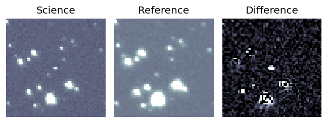
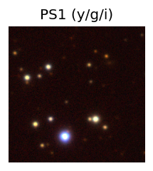

TESS: Sectors [17 18 24 57 58 77 78 84 85]
PS1: 0 sources in 3 arcsec
LegacySurvey: 0 sources in 3 arcsec
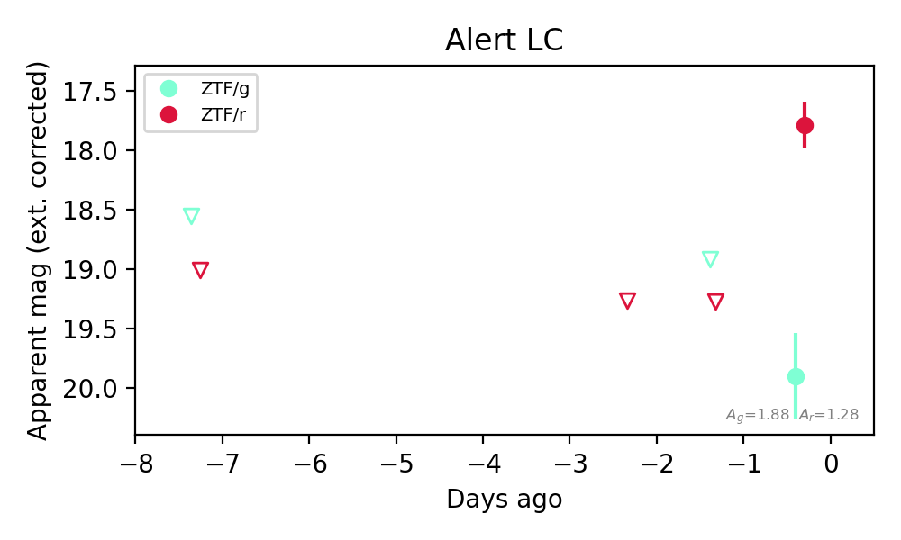
Extinction-corrected gr color:
From alerts: 2.12 +/- 0.41 mag
Consistent with synchrotron, g-r>0!
Rise Rate:
r: 1.46 mag/day
Fade Rate:
2. [ZTF] ZTF26abtvzdo (Afterglow?) [Back to Top] [Share] [Trigger Swift] [Fritz Alert] [Fritz Source] [Lasair]RA, Dec: 0.05161, 60.98777 0h 0m12.39s, 60d59m15.98sGalactic (l, b): 116.75831, -1.2684 ext(g-r) = 1.08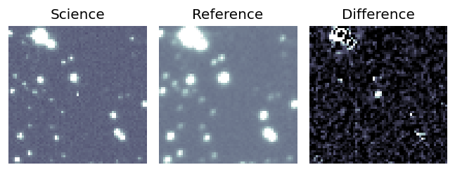
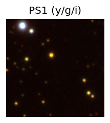

TESS: Sectors [17 18 24 57 58 77 78 84 85]
PS1: 0 sources in 3 arcsec
LegacySurvey: 0 sources in 3 arcsec
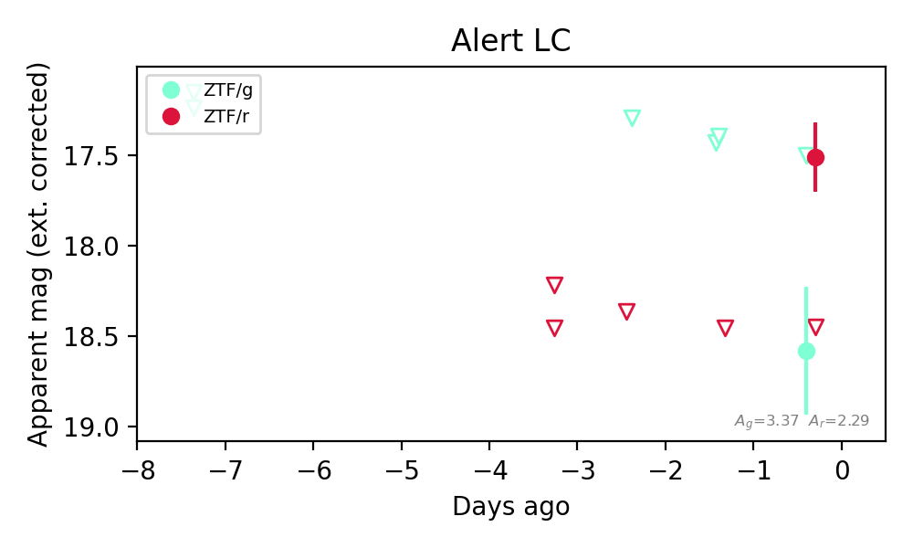
Extinction-corrected gr color:
From alerts: 1.07 +/- 0.4 mag
Consistent with synchrotron, g-r>0!
Rise Rate:
r: 0.92 mag/day
Fade Rate:
Section 2: Older Sources Observed Last Night (11)
0. [ZTF] ZTF26abthpmr (FBOT?) [Back to Top] [Share] [Trigger Swift] [Fritz Alert] [Fritz Source] [Lasair]RA, Dec: 346.10758, 35.40859 23h 4m25.82s, 35d24m30.93sGalactic (l, b): 99.5254, -22.55293 ext(g-r) = 0.082


TESS: Sectors [16 56 83]
PS1: 1 source in 3 arcsec Closest: d = 1.64 arcsec photoz=0.53+/-0.09 peak abs mag = -23.50
LegacySurvey: 0 sources in 3 arcsec

Extinction-corrected gr color:
From alerts: -0.41 +/- 0.13 mag
Rise Rate:
g: 0.88 mag/day
r: 0.57 mag/day
Fade Rate:
1. [ZTF] ZTF26abtijze (FBOT?) [Back to Top] [Share] [Trigger Swift] [Fritz Alert] [Fritz Source] [Lasair]RA, Dec: 352.20664, 25.59287 23h28m49.59s, 25d35m34.33sGalactic (l, b): 100.46637, -33.64953 ext(g-r) = 0.07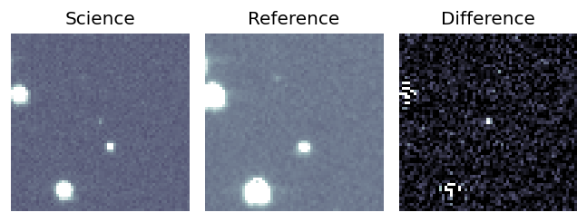
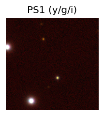
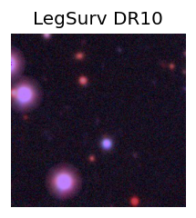
TESS: Sectors [56 83]
PS1: 0 sources in 3 arcsec
LegacySurvey: 1 sources in 3 arcsec Closest: d = 0.54 arcsec, 124.0 deg (east of north) photoz=0.9 (68% bounds 0.72, 1.07), type=REX peak abs mag (ext. corrected) = -23.97 (68% bounds -23.38, -24.42)
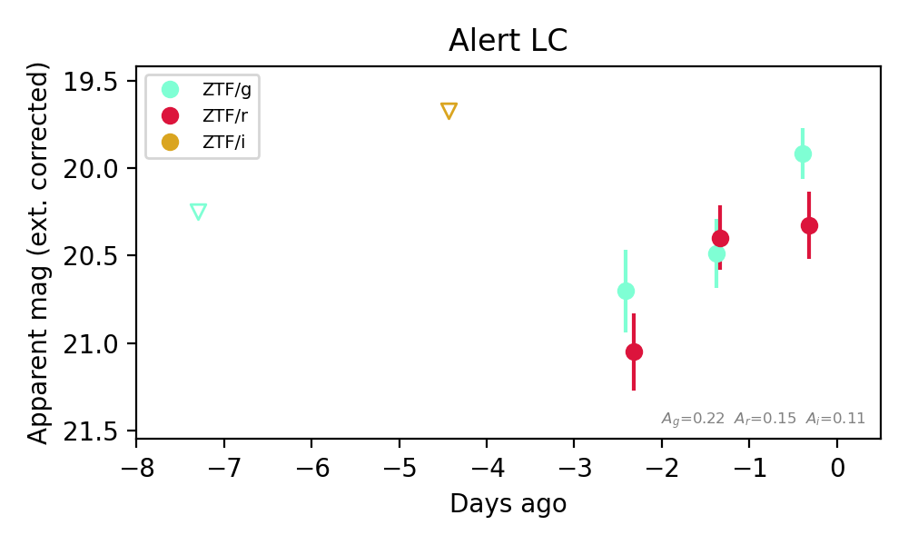
Extinction-corrected gr color:
From alerts: -0.41 +/- 0.24 mag
Rise Rate:
g: 0.42 mag/day
r: 0.34 mag/day
Fade Rate:
2. [ZTF] ZTF26abtlayz (FBOT?) [Back to Top] [Share] [Trigger Swift] [Fritz Alert] [Fritz Source] [Lasair]RA, Dec: 25.22602, 1.64861 1h40m54.25s, 1d38m55.01sGalactic (l, b): 147.38247, -58.85484 ext(g-r) = 0.034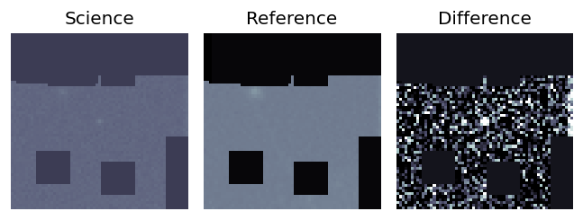
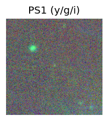
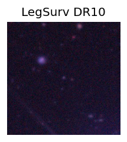
TESS: Sectors [30 42 43 70 97]
PS1: 0 sources in 3 arcsec
LegacySurvey: 1 sources in 3 arcsec Closest: d = 0.26 arcsec, 355.7 deg (east of north) photoz=0.53 (68% bounds 0.36, 0.63), type=REX peak abs mag (ext. corrected) = -22.3 (68% bounds -21.31, -22.76)
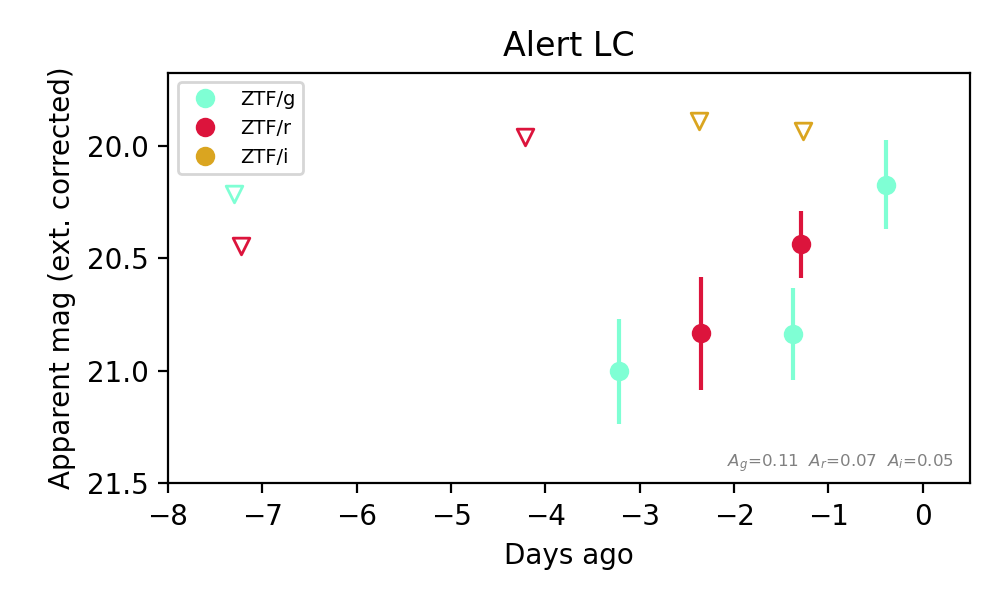
Extinction-corrected gr color:
From alerts: 0.4 +/- 0.25 mag
Extinction-corrected gi color:
From alerts: 0.91 +/- 99 mag
Extinction-corrected ri color:
From alerts: 0.51 +/- 99 mag
Consistent with synchrotron, g-r>0!
Rise Rate:
g: 0.28 mag/day
Fade Rate:
3. [ZTF] ZTF26abtnnmo (Afterglow?) [Back to Top] [Share] [Trigger Swift] [Fritz Alert] [Fritz Source] [Lasair]RA, Dec: 259.47938, 3.61441 17h17m55.05s, 3d36m51.87sGalactic (l, b): 25.19357, 22.40905 ext(g-r) = 0.114Coincident trigger: Fermi/GBM GRB260910970 (r=6.2 deg, sep 4.5 deg = 0.73 r; 0.15 d before first detection)Trigger time(s) marked on the light curve; error circles in the localization panel.


TESS: Sectors 118
PS1: 0 sources in 3 arcsec
LegacySurvey: 0 sources in 3 arcsec


Extinction-corrected gr color:
From alerts: -0.01 +/- 0.22 mag
Consistent with synchrotron, g-r>0!
Rise Rate:
r: 0.67 mag/day
Fade Rate:
4. [ZTF] ZTF26abtnrkn (Afterglow?) [Back to Top] [Share] [Trigger Swift] [Fritz Alert] [Fritz Source] [Lasair]RA, Dec: 264.34838, -5.9878 17h37m23.61s, -5d-59m-16.07sGalactic (l, b): 18.83576, 13.50042 ext(g-r) = 0.986Coincident trigger: Fermi/GBM GRB260910970 (r=6.2 deg, sep 6.4 deg = 1.04 r; 0.21 d before first detection)Trigger time(s) marked on the light curve; error circles in the localization panel.


TESS: Sectors 118
PS1: 0 sources in 3 arcsec
LegacySurvey: 0 sources in 3 arcsec


Extinction-corrected gr color:
From alerts: -1.08 +/- 99 mag
Rise Rate:
r: 8.74 mag/day
Fade Rate:
r: 0.49 mag/day
5. [ZTF] ZTF26abtnsbq (Afterglow?) [Back to Top] [Share] [Trigger Swift] [Fritz Alert] [Fritz Source] [Lasair]RA, Dec: 266.00779, 4.42029 17h44m1.87s, 4d25m13.03sGalactic (l, b): 29.14254, 17.00047 ext(g-r) = 0.295Coincident trigger: Fermi/GBM GRB260910970 (r=6.2 deg, sep 7.3 deg = 1.19 r; 0.16 d before first detection)Trigger time(s) marked on the light curve; error circles in the localization panel.


TESS: Sectors 118
SDSS (<15 kpc):Found SDSS phot-z: z=0.12; peak abs mag = -18.63
PS1: 1 source in 3 arcsec Closest: d = 0.66 arcsec photoz=0.13+/-0.05 peak abs mag = -18.73
LegacySurvey: 0 sources in 3 arcsec


Extinction-corrected gr color:
From alerts: 0.67 +/- 0.36 mag
Consistent with synchrotron, g-r>0!
Rise Rate:
Fade Rate:
r: 0.69 mag/day
6. [ZTF] ZTF26abtnsjh (Afterglow?) [Back to Top] [Share] [Trigger Swift] [Fritz Alert] [Fritz Source] [Lasair]RA, Dec: 266.64985, -9.02884 17h46m35.96s, -9d-1m-43.84sGalactic (l, b): 17.29856, 10.00916 ext(g-r) = 1.037Coincident trigger: Fermi/GBM GRB260910970 (r=6.2 deg, sep 10.2 deg = 1.66 r; 0.20 d before first detection)Trigger time(s) marked on the light curve; error circles in the localization panel.


TESS: Sectors 118
PS1: 1 source in 3 arcsec Closest: d = 0.36 arcsec photoz=0.82+/-0.13 peak abs mag = -26.09
LegacySurvey: 0 sources in 3 arcsec


Extinction-corrected gr color:
From alerts: -0.59 +/- 99 mag
Rise Rate:
Fade Rate:
r: 1.06 mag/day
7. [ZTF] ZTF26abtqfyy (FBOT?) [Back to Top] [Share] [Trigger Swift] [Fritz Alert] [Fritz Source] [Lasair]RA, Dec: 342.96099, 16.02354 22h51m50.64s, 16d 1m24.73sGalactic (l, b): 85.48641, -38.00264 ext(g-r) = 0.075


TESS: Sectors [56 83]
SDSS (<15 kpc):Found SDSS phot-z: z=0.20; peak abs mag = -19.74
PS1: 0 sources in 3 arcsec
LegacySurvey: 1 sources in 3 arcsec Closest: d = 0.24 arcsec, 238.9 deg (east of north) photoz=0.17 (68% bounds 0.12, 0.27), type=DEV peak abs mag (ext. corrected) = -19.34 (68% bounds -18.56, -20.54)

Extinction-corrected gr color:
From alerts: 0.23 +/- 0.29 mag
Consistent with synchrotron, g-r>0!
Rise Rate:
g: 0.33 mag/day
Fade Rate:
8. [ZTF] ZTF26abtqvvj (Afterglow?) [Back to Top] [Share] [Trigger Swift] [Fritz Alert] [Fritz Source] [Lasair]RA, Dec: 1.6468, 49.45136 0h 6m35.23s, 49d27m4.89sGalactic (l, b): 115.48441, -12.77073 ext(g-r) = 0.118


TESS: Sectors -1
PS1: 0 sources in 3 arcsec
LegacySurvey: 0 sources in 3 arcsec

Rise Rate:
g: 1.07 mag/day
Fade Rate:
r: 0.26 mag/day
9. [ZTF] ZTF26abtsywy (FBOT?) [Back to Top] [Share] [Trigger Swift] [Fritz Alert] [Fritz Source] [Lasair]RA, Dec: 20.65404, -0.1458 1h22m36.97s, 0d-8m-44.90sGalactic (l, b): 139.72113, -61.99697 ext(g-r) = 0.039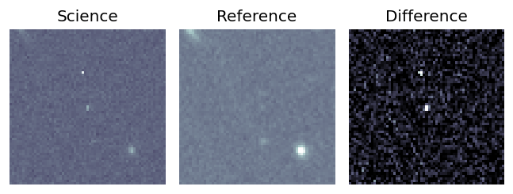
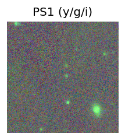
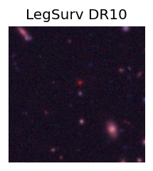
TESS: Sectors [ 3 30 42 43 70]
SDSS (<15 kpc):Found SDSS phot-z: z=0.34; peak abs mag = -21.67
PS1: 0 sources in 3 arcsec
LegacySurvey: 1 sources in 3 arcsec Closest: d = 1.77 arcsec, 279.5 deg (east of north) photoz=0.55 (68% bounds 0.5, 0.59), type=REX peak abs mag (ext. corrected) = -22.94 (68% bounds -22.69, -23.14)
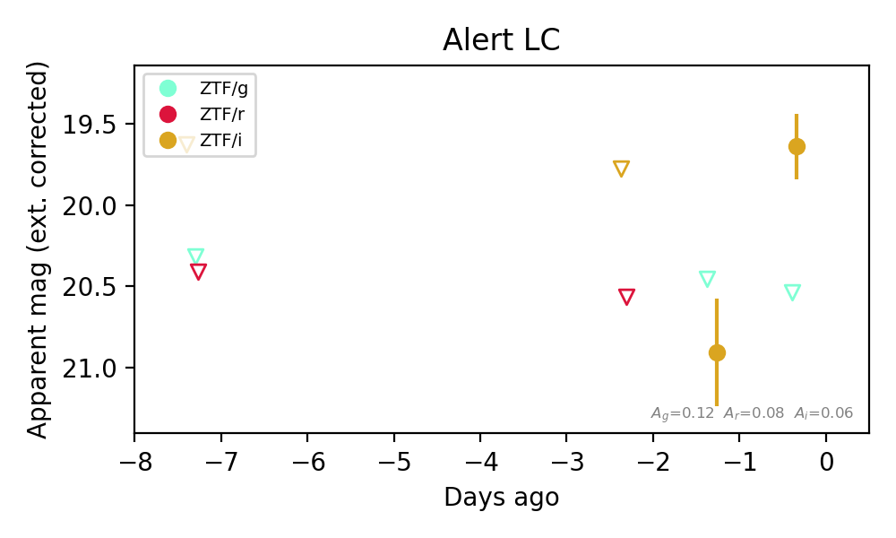
Extinction-corrected gi color:
From alerts: 0.9 +/- 99 mag
Extinction-corrected ri color:
From alerts: -2.19 +/- 99 mag
Rise Rate:
i: 1.38 mag/day
Fade Rate:
10. [ZTF] ZTF26abtvuqs (FBOT?) [Back to Top] [Share] [Trigger Swift] [Fritz Alert] [Fritz Source] [Lasair]RA, Dec: 348.12269, 60.76661 23h12m29.44s, 60d45m59.78sGalactic (l, b): 111.13995, 0.18045 ext(g-r) = 1.328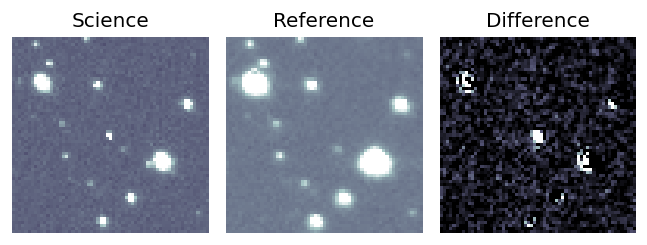
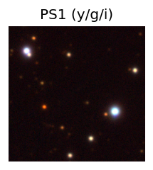

TESS: Sectors [17 24 57 58 77 78 84 85]
PS1: 1 source in 3 arcsec Closest: d = 0.87 arcsec photoz=0.38+/-0.22 peak abs mag = -26.46
LegacySurvey: 0 sources in 3 arcsec
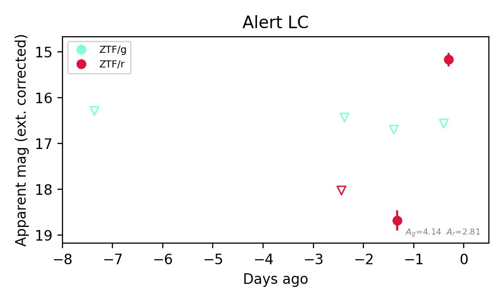
Extinction-corrected gr color:
From alerts: 1.39 +/- 99 mag
Rise Rate:
r: 3.43 mag/day
Fade Rate: